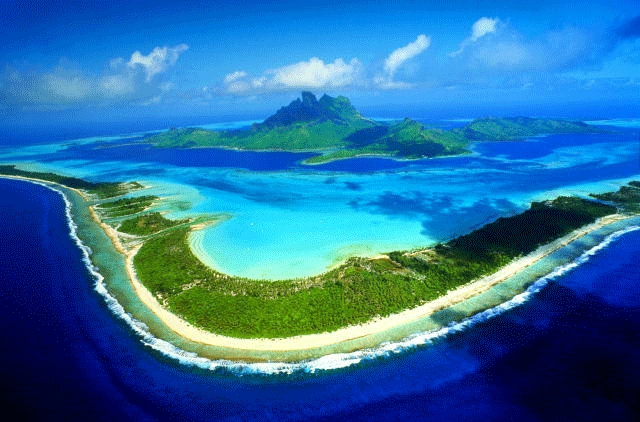
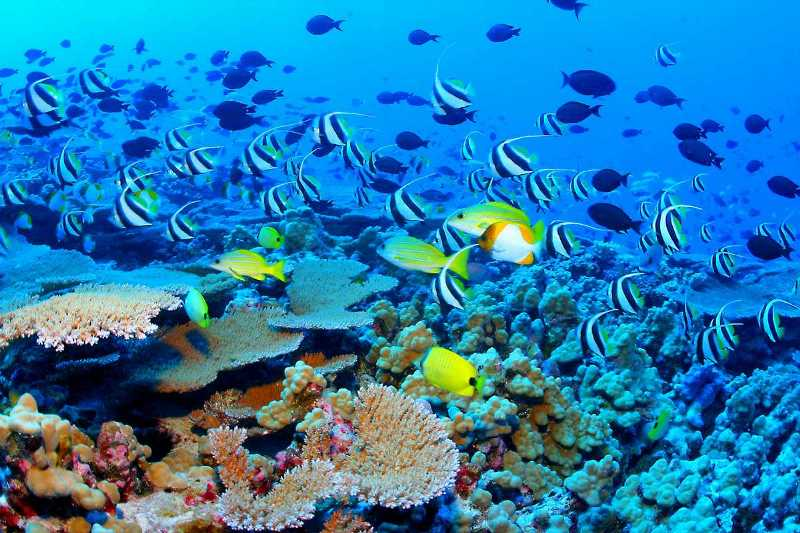
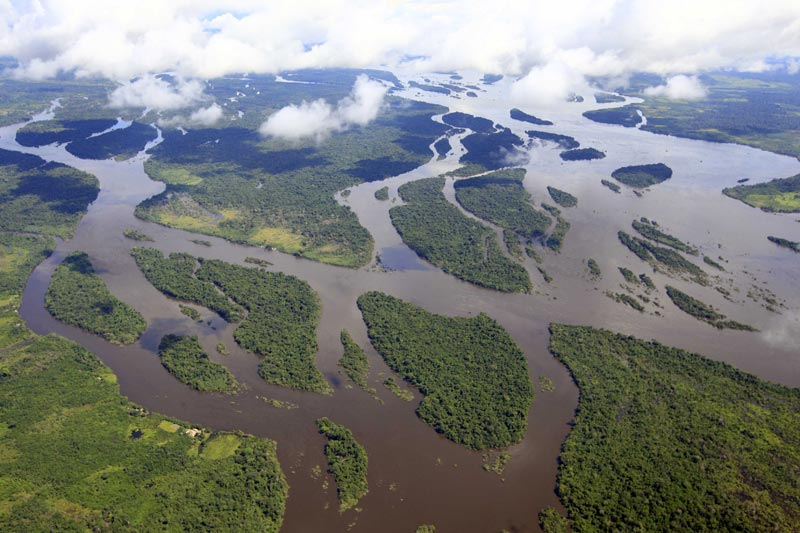
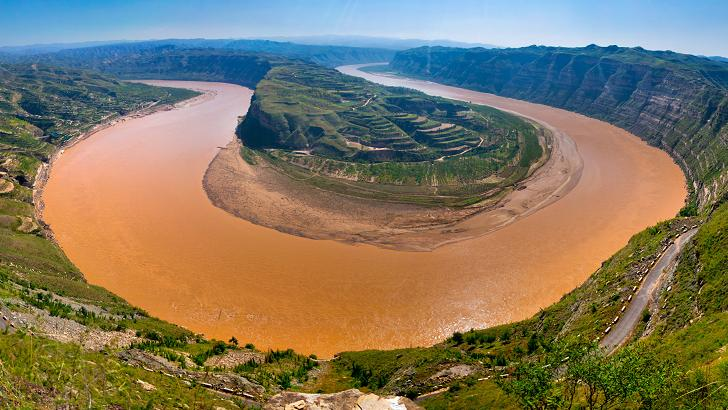
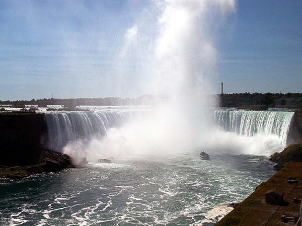
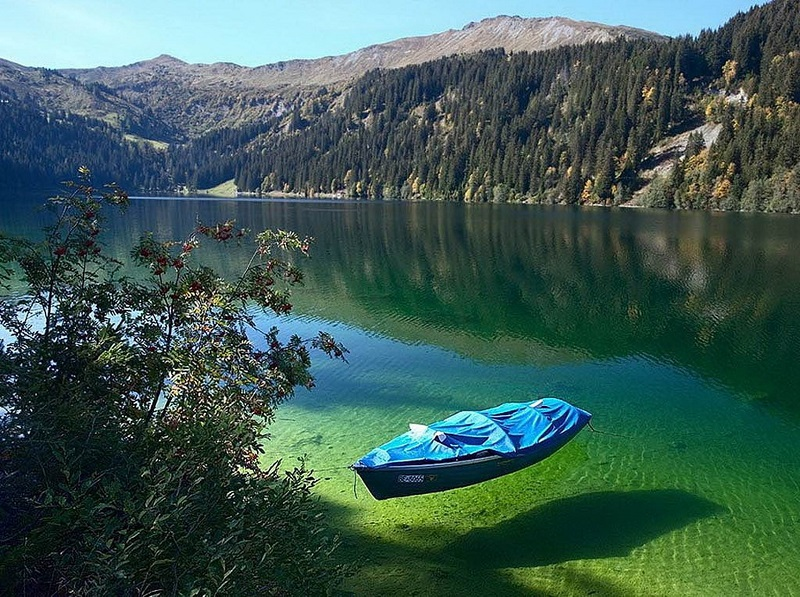

Найбільший з океанів - Тихий. Він займає майже таку саму площу, скільки всі інші океани (Атлантичний, Індійський і Північний Льодовитий) разом узяті. На його території (159 млн. кв. км) досить вільно розмістилися б усі материки, причому, залишилося б місце ще й для другої Африки.
Найбільшим морем світу є Саргасове, розташоване в центрі Атлантичного океану, між Північною Америкою і Європою. Площа його досягає 7 млн. км. кв., тобто майже така сама, як Австралії. До того ж це море є самим зовнішнім серед морів земної кулі а береги його утворені контурами океанічних течій. Недарма Саргасове море називають "морем без берегів".
Якщо ж не враховувати "моря без берегів", то найбільшим виявиться внутрішнє Середземне море з площею 2,9 млн. км. кв.
Найменшим морем є Мармурове, затиснуте між Балканським півостровом та Малою Азією. Його площа становить всього (11,5 тис.кв.км), тобто трохи меннша від площі Тернопільської області.
Азовське море серед усіх морів земної кулі найбільше врізується в глиб материка Євразія (на півдні Східно-Європейської рівнини).
Наймілкішим серед морів також виявилось Азовське. Середня глибина його досягає лише 8 м, а найбільша - не перевищує 15 м.
Найбільша солоність поверхневих вод фіксується в Червоному морі, розташованому між пустельними берегами Африки та Аравійського півострова (42 промілле, а в Суецькій затоці навіть 43,5 промілле).
Найменш солоне море - Балтійське: в 1 л його води міститься від 0,3 до 0,8 г солі.
Найвищою температурою поверхневих вод (35,6°) відзначаються Перська затока і південна частина Червоного моря.
Найхолоднішими, з температурами -1,5°; - 1,8° взимку (що цілком закономірно) є такі моря, як Східно-Сибірське і Бофорта в Північному Льодовитому океані, Берінгове та Охотське в Тихому океані, а також моря Росса і Уедделла біля берегів Антарктиди.
Найвищу температуру глибинних вод морів і океанів має Червоне море: на дні в південній його частині нещодавно виявлено "озера" води з температурою +72°С.
Найпрозоріше серед морів - Середземне. Металевий диск (диск Секкі), опущений в його східній частині, видно на глибинах до 60 м.
Найменш солоне море - Балтійське: в 1 л його води міститься від 0,3 до 0,8 г солі.
Найбільша лагуна планети - Патус в районі Ріу-Гранді-ду-Сул. Її довжина складає близько 280 км, площа - 9,8 тис. кв. км, а максимальна ширина - 70 км.
Найбільший кораловий риф світу - Великий бар'єрний риф у східних берегів Австралії. Споруда простягається на 2600 км і займає 133 кв.милі поверхні океанічного дна. Складається з 2900 окремих рифових споруд. Біля 350 видів коралів формують риф і 70 видів морських організмів проживають в його межах. Науковці оцінюють вік Великого бар'єрного рифа у 20 тис.років, але геологи, яким вдалося взяти зразки речовини у основи споруди, вважають, що їй може бути і 500 тис.років.
Найбільший і найглибший підводний каньон розташований посередині Берингового моря і зветься Жемчужним. Його глибина досягає 2,6 км, тому він глибший, аніж суходільний Великий каньон в США (той має глибину 1,83 км). Площа дренованої каньоном території - 11,4 тис.км.кв, об'єм - 5800 км.куб.
Найдовша пляжна смуга Землі розміщена на узбережжі Бразилії - 7,5 тис.км довжиною.
Найбільшим серед численних озер на Землі є Каспійське море. Його площа (372 тис. кв. км) більша за такі європейські країни, як Італія, Бельгія і Нідерланди, разом узяті.
"Найвищим" озером на земній кулі є Арпорт-Цо в Китаї. Воно розташоване в Тібеті на висоті 5465 м вище рівня океану.
Найглибше озеро земної кулі - Байкал. Його глибина завдяки розташуванню в тектонічній рифтовій улоговині досягає 1637 м.
Найдовшою річкоюЗемлі є Ніл (з притокою Кагерою). Довжина його близько 6,5 тис. км.
Найповноводніша річка - Амазонка. Площа її водозбору досягає 7 млн. кв. км, а це майже дорівнює такому материку, як Австралія. В Амазонку впадає понад 200 приток завдовжки до 3,5 тис. км кожна. А до Атлантичного океану річка вносить 1/5 частину всієї води річок земної кулі. Кожну секунду вона поповнює океан майже на 120 тис. куб. м води.
Найбільшу площу водозбору серед річок світу має Амазонка (біля 7 млн.км.кв).
Найширша річка у світі - все та ж Амазонка: її ширина у місті Гурупа, Бразилія, становить 11 км і досягає 45 км під час розливів. У естуарії ширина Амазонки досягає 100 км.
Найглибшою річкою світу також є Амазонка: майже 100 м біля міста Обідос, Бразилія.
Найбільша серед річок світу дельта - у індійської річки Ганг (біля 80 тис.кв.км). На цій площі можна розмістити три такі європейські держави, як Бельгія або Нідерланди.
Найкоротша річка у світі, згідно Книги рекордів Гіннесса, має довжину 61 м і з'єднує Гіант Спрінгс та Міссурі у штаті Монтана. В той же час річка Ді в Орегоні з'єднує озеро Девіл із Тихим океаном біля Лінкольн-Сіті і має довжину 37 м.
Найдовша притока річки на Землі - Пурус у басейні Амазонки (3379 км, 17-а за довжиною річка світу).
Найповноводніша притока світу: Мадейра у басейні Амазонки. витрата води становить 17 тис.м.куб./секунду. Довжина річки 3239 км, це десята найповноводніша річка світу.
Найпотужнішим у світі водоспадом є Сеті-Кедас (або Гуайра) в Південній Америці на річці Парана, там, де її перетинає Південний тропік (поблизу кордонів Бразилії та Парагваю), і складається із семи каскадів заввишки 40 м. Назва Сеті-Кедас у перекладі з португальської означає "сім водоспадів". Гуайра скидає 13,31 тис. куб. м води за секунду, тобто 1150 млн. за добу! Це більш як удвічі перевищує потужність Ніагари. Другий за потужністю водоспад земної кулі також розташований у цій місцевості на річці, назву якої носить, на відстані 26 км від її впадіння в Парану. Це водоспад Ігуасу, що мовою індіанців гуарані означає "велика вода". Він же - найширший водоспад на земній кулі. Маючи ширину 2,7 км, Ігуасу скидає з 72-метрової висоти щосекунди 12866 г води, тобто 766 т за хвилину чи 1103 млн. т за добу. На третьому місці - африканський водоспад Ауграбіс -"місце шуму". Він розташований у важкодоступній пустинній місцевості на річці Оранжева. А на четвертому і п'ятому місцях загальновідомі Вікторія та Ніагара.
Найвищий водоспад на Землі - Анхель на притоці річки Оріноко, у Венесуелі. Вода тут спадає з висоти 1054 м.
Найбільший гірський льодовик на земній кулі розташований в Антарктиді. Це льодовик Фільхнера. Довжина його 925 км, а товщина близько 4000 м.
Найгарячіша річка - приплив Амудар'ї Таірсу. В окремих місцях температура води піднімається до +45°С.
Найгарячіше озеро - Каспійське море. Тут на Бирючій косі зафіксована температура 37,2°С.
Озеро Тітікака - найвисокогірніше судноплавне озеро світу. Воно розташоване на висоті понад 3810 м. над рівнем світового океану. Це також друге за площею прісноводне озеро Південної Америки.
Найбільше прісноводне озеро світу - озеро Верхнє у системі Великих озер Північної Америки. Його площа становить 82 тис.км.кв., а води у ньому вистачило б, щоб заповнити усі інші великі озера та ще три озера Ері.
Найсолоніше озеро - Мертве море (солоність досягає понад 400 промілле). Водночас це озеро з найнижчим у світі урізом води (-408 м).
Найбільший річковий острів у світі - Бананаль на Арагуайї, притоці Токантінса, Бразилія (19,2 тис.км.кв).
Найбільший острів, оточений прісними водами, у світі - Маражо в дельті Амазонки (47,6 тис.км.кв.).
Найбільше болото на планеті - Пантанал, 200 тис.км.кв. Знаходиться в межах Бразилії, Болівії та Парагваю і належить до ареалів з найбільшим біорізноманіттям на Землі.